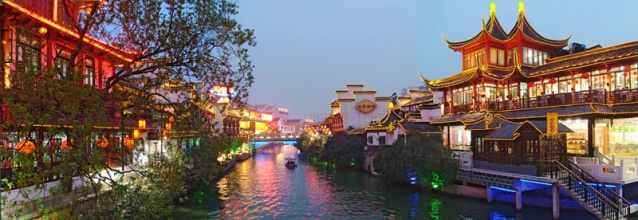
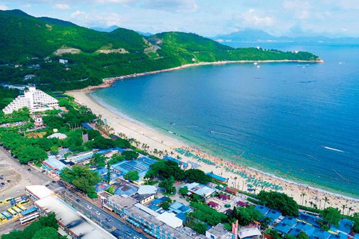

珠海•外伶仃岛
游山玩水吃海鲜”，与香港一水之隔。岛上伶仃湾、塔湾、大东湾的沙滩， 沙质细腻，海水湛蓝，清澈见底，是垂钓、潜水、滑浪的好去处。还有外 伶仃岛的海鲜“三宝”，海胆、狗爪螺和将军帽。
地址：
珠海市香洲区担杆镇外伶仃岛
门票信息：
上岛不需要门票，船票需另付费
开放时间：
全年开放
交通攻略：
宝安机场乘坐领航巴士→珠海香洲候机楼→乘船前往外伶仃岛
中山• 长江水世界
园区内各种各样的景观细节布置也处处体现了深海主题。景区游乐项目有: “深海漩涡”,“巨浪飞舟”,“飞越彩虹”,“雨林部落”,“爱琴海湾”,“丛林漂流”等。 在这里您可倾听海浪的声音，享受阳光的沐浴。
地址：
广东省中山市翠亨大道85号
门票信息：
90元起
开放时间：
4月~10月
交通攻略：
宝安机场乘坐领航巴士→珠海香洲候机楼→乘船前往外伶仃岛
惠州•巽寮滨
巽寮滨海旅游度假区滨海旅游资源得天独厚。素以“石奇美、水奇清、沙奇 白”而著称，被赐予“动物石景公园”、“绿色翡翠”、“天赐白金堤”、“东方 夏威夷”等多种美誉。
地址：
惠州惠东巽寮湾旅游度假区
门票信息：
景区免费进，内部部分游乐设施需收费
开放时间：
全年开放
交通攻略：
宝安机场乘坐领航巴士 → 惠东候机楼 →乘车前往巽寮湾旅游度假区
东莞•松山湖
整个园区风景秀丽，在阳光和微风的沐浴下，可以享受着青山绿水的滋润， 沿着湖边的通幽曲径，可以欣赏落英缤纷，绿草如茵的美丽景致。登高望 远，可以一览偌大松湖的雄伟气势。
地址：
广东省东莞市大学路与新城路交叉处
门票信息：
免费开放
开放时间：
全年开放
交通攻略：
宝安机场乘坐领航巴士 → 松山湖城市候机楼 → 乘车前往松山湖风景区
深圳•世界之窗
把世界奇观、历史遗迹、古今名胜、民间歌舞表演融为一体的人造主题公 园。世界之窗分为世界广场、亚洲区、欧洲区、非洲区、美洲区等八大区 域。公园有历史遗迹、名胜、自然风光、世界奇观、民居、雕塑等。
地址：
深圳市南山区华侨城深南大道9037号
门票信息：
85元起
开放时间：
全年开放
交通攻略：
宝安机场乘坐领航巴士 → 深圳湾城市候机楼 → 乘车前往世界之窗

深圳•锦绣中华
中国第一个荟萃各民族民间艺术、民俗风情和民居建筑于一园的大型文化 游览区。汇聚了56个民族的建筑风情。她是目前世界上面积最大、内容最 丰富的实景微缩景区。
地址：
深圳市南山区深南大道9003号锦绣中华民俗村
门票信息：
65元起
开放时间：
全年开放
交通攻略：
宝安机场乘坐领航巴士 → 深圳湾城市候机楼 → 乘坐公交前往锦绣中华民俗村

深圳•大鹏
被称为深圳最后的“桃花源”，被《中国国家地理》评为“中国最美的八大海 岸”之一。大鹏新区有深圳大鹏半岛国家地质公园、龙岩古寺、赖恩爵将军 第、刘起龙将军墓、福田世居、长安世居、坝光村等景点。
地址：
深圳市龙岗区大鹏景区
门票信息：
免费开放
开放时间：
全年开放
交通攻略：
宝安机场乘坐领航巴士 → 大鹏城市候机楼 → 乘车前往大鹏景区